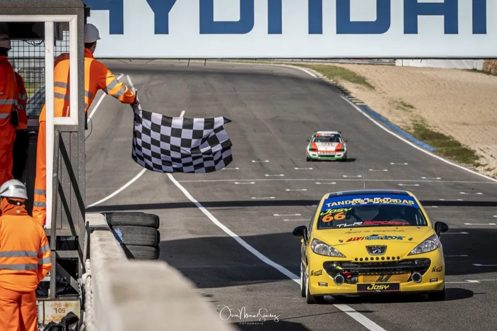

CV
The long version. There is a shorter one if this bores you.
Studies
My academic journey began with a Bachelor's degree in Physics, specializing in Materials (strange, right?), at the Universidad Europea de Madrid (2019–2023). Since I realized materials weren't my thing, for my thesis I worked on simulating the diffuse emission of the Galaxy within the context of the LiteBIRD space mission, supervised by Dr. Marcos López-Caniego Alcarria. Later, I pursued a Master's in Theoretical Physics at the Universidad Autónoma de Madrid (2023–2024), where I developed my thesis on multimessenger signatures of particle acceleration by black holes, under the supervision of Dr. Rafael Alves Batista.
In October 2024 I continued with the Master's in Advanced Physics and Applied Mathematics at the Universitat de les Illes Balears. My thesis there explored the rich numerical phenomenology of the binary black hole ringdown, under the direction of Dr. Xisco Jiménez Forteza, in a project that is part of the AECT-2025-1-0011 allocation at the Barcelona Supercomputing Center (MareNostrum 5).
Since 2025 I have been doing a PhD in Theoretical Physics at the UIB, working on numerical perturbation theory with Xisco Jiménez Forteza.
Tools
Throughout my studies I have learned and worked with various tools, such as Teuk-Fortran-2020, which I use to solve (or at least try to) the Teukolsky equations, and I have taken specialized courses in general relativity, gravitational waves, dynamical systems and quantum field theory. My studies in applied mathematics have also let me explore areas such as mathematical models in neuroscience and image restoration.
I'm proficient in Python, C++, MATLAB and Mathematica, and I have experience with astronomy software including Aladin, SASDABA (Star Analyser Spectroscopic Data Base), TOPCAT (Tool for Operations on Catalogues and Tables) and VOSA (VO Sed Analyzer).
Beyond the desk
I've been a futsal assistant referee with the Royal Spanish Football Federation (I reached 2nd Division "B", the third-highest tier in Spain) and an intern at the Blas Cabrera Institute of Physical Chemistry at the CSIC, where I spent four months learning what a real laboratory is like in the Surface Analysis and Mössbauer Spectroscopy Group, under the supervision of Dr. José Francisco Marco Sanz. I've also worked (and sometimes still do) at the Madrid Jarama Circuit as a track marshal (those people waving the colored flags) and as a timekeeper at FIA rallies.

Observing
My passion for science goes beyond the classroom. I've also taken part in projects such as estimating the age of star clusters in the Heart Nebula, during a research stay at the Calar Alto Astronomical Observatory in February 2024.
Languages
Native in Spanish and Ukrainian, professional in English. During my time in Mallorca I also picked up a "miqueta" of Catalan.
Short version
If reading all of this bored you, here's a much shorter version. But anyway, you've already read it all. :)
Download CV